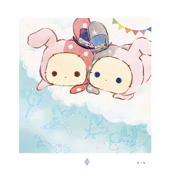

關於San-X
San-X（サンエックス，San Ekkusu），是一個創立於1932年的文具企業，該企業以創造和行銷可愛卡通形象為人所熟知。 該企業曾創造如懶懶熊、趴趴熊、角落小夥伴、烤焦麵包等各具特色的擬人化角色。 趴趴熊的創造者末政ひかる曾表示：「這不只是可愛。有些不同的地方是 - （它們）有一副鬆弛而無力的模樣。」
為慶祝San-X公司創業90週年紀念，2022年時San-X在日本的松屋銀座舉辦到當時為止所有登場人物大集合的特別展覽會「San-X 90周年大展覽會」，並以此為開端，陸續在日本全國各地展開展覽，
這些角色不知不覺陪伴了人們好長一段時間了，未來他們也會繼續和各位一同成長，感受生活中的各種酸甜苦辣與歡欣幸福。
知名角色代表簡介
本網站會介紹San-X旗下的一些知名角色
h1烤焦麵包
h2烤焦麵包
h3烤焦麵包
h4烤焦麵包
h5烤焦麵包
h6烤焦麵包
| 中文名稱 | 日文名稱 | 發表年月 | 簡介 | 外觀 |
|---|---|---|---|---|
| 趴趴熊 | たれぱんだ | 1998年7月 | 趴趴熊身長大約5公分左右，手感酷似一坨麻糬，性格慵懶，雖然有四隻腳，卻從不用來走路，而是用滾動方式移動，無論是前滾、後滾還是側翻都很擅長，但速度只有平均每小時2.75公尺…… 當兩隻貼貼時代表互有好感，上下堆疊代表熱戀中，但如果有明顯的大小差距，就只是單純的親子關係，屁股對人則代表厭惡。 | |
| 烤焦麵包 | こげぱん | 2000年7月 | 一塊用優質北海道十勝平野原產最高級小豆製造而成的豆沙麵包，每日只限定售出20個。可惜因爲麵包師傅的失誤，讓本來十分名貴的麵包成了被燒焦的麵包，變成不能賣出的商品， 這讓烤焦麵包受到了很大的打擊，覺得麵包的人生已經完結，從此過著自暴自棄的生活。 烤焦麵包不時遭到其他麵包投以奇異目光，直到他遇見了草莓麵包、漂亮麵包、奶油麵包、炭焦麵包等其他的角色，才發覺作爲一個好賣麵包的人生雖然已經結束，但作爲一個好麵包的人生才要開始， 只要和同伴們在一起，人生必定會走的非常快樂。 | |
| 拉拉熊 | リラックマ | 2003年9月 | 拉拉熊(懶懶熊/Rilakkuma)名字的由來是日文片假名中「放鬆」（リラックス，rirakkusu）和「熊」（クマ，kuma）兩字的組合。某一天突然出現在小薰家中，擅自住下的布偶熊，真實身份不明。 背後有拉鍊，可以看見裡面有水滴花紋的布料。繪本「懶熊生活」系列的封面就以半開的拉鍊以及水滴紋裝飾。 繪本中偶爾也會有穿著河童或兔子等、熊以外的布偶的畫面。而且熊布偶裝是買來的，有許多件備用，有時也會洗淨晾乾。也曾經縮水變舊、被牛奶熊惡作劇加上裝飾等等。 不過頭的部份，不確定是不是布偶、也不確定是否有備用及有沒有拿去洗。耳朵有時會因睡覺壓扁，似乎能夠自由地動耳朵。 喜歡的食物是鬆餅、糯米糰子、熱蛋糕、蛋包飯、布丁等，不喜歡太辣的食物。常常躺著滾來滾去，喜歡黃色的抱枕（小薰的懶骨頭抱枕）。 興趣是看電視、聽音樂、泡溫泉等。名言是「拘泥小細節是成不了事的」、「可以的話，真想這樣懶～懶過日子」、「唉唷，慢慢來嘛」。 | |
| 掌上萌寶 小海豹 |
まめゴマ | 2005年5月 | 小海豹 (まめゴマ) 是一種手掌大小的海豹 (日文「まめ」是豆，常被用作意指事物的微型版本，「ゴマ」是斑海豹 (ゴマフアザラシ)的縮寫 )。 小海豹有多種不同的顏色，包括白色、藍色、粉色、黃色和黑色。這些小海豹通常被描繪成體型細小（12公分，重約200克），可以生活在一個普通的金魚缸中， 通常用一些冰塊來保持水的涼爽。 它們還出現在浴缸中的廣告和商品中，以及在倉鼠籠的輪子上等。與普通海豹不同，小海豹是雜食性的，尤其是豆類，它也更喜歡枝豆。 小學生小茜家中經營豆腐店，一天她偶然拯救了擱淺在海邊的白色小海豹，為了幫助身體虛弱的小海豹，她的朋友介紹她到小海豹樂園，並把牠帶回家。 可愛的小海豹被改名為豆太，將作為豆川家的新成員生活。 | |
| 靴下貓 | 靴下にゃんこ | 2007年9月 | 靴下(KUTSUSHITA)的意思是襪子，にやんこ(NYANKO)是稱呼貓咪的一種可愛說法。 有一天，有隻迷了路、腳穿著白色襪子的黑貓——靴下貓出現在家裡。脖子上繫著一條紅色項圈。巧合之下，跑進了主人的房子，就這麼住下來了… 「靴下貓」療癒了你我在忙碌的日子裡焦躁不安的心靈。那雙無辜的大眼睛給了我們最大的撫慰力量，也帶我們重新認識幸福可以多簡單。牠讓我們知道，原來幸福就在身邊。 雖然偶爾會調皮搗蛋，模樣可愛又愛撒嬌的牠的確讓生活變得更有趣。一直以為只是暫時收留靴下貓，刻意不關窗，方便牠想走就走。直到那天， 接到那通來電。靴下貓終於要回到原飼主家了。那一晚，才發現原來握在手中的小小幸福，竟是如此珍貴。 | |
| 深情馬戲團(憂傷馬戲團) | センチメンタルサーカス | 2010年9月 | 歡迎來到寂寞人的馬戲團……一個關於淡忘已久的老朋友的故事。在垃圾場裡醒來的布偶夏波，對當晚看見的巡迴馬戲團念念不忘，於是組成了「深情馬戲團」。 成員們來自小巷，街角，或是廢墟裡的遊樂園等等，每一個都是「被遺忘的寂寞人」。 —也許某一天會再遇到能夠珍惜自己的「主人」—因此今晚，布偶們的第一晚演出，即將揭開序幕。 |  |
| 角落小夥伴(角落生物) | すみっコぐらし | 2012年9月 | 「すみっこぐらし」（Sumikko Gurashi）在台灣被翻譯為角落小夥伴、角落生物，「すみ」是「角落」的意思，這系列的每個角色都喜歡窩在角落，只要靠著牆就很有安全感， 一般窩在角落總是給人一種被邊緣、冷落的可憐刻板印象，但「角落小夥伴」們卻被塑造出即使躲在黑暗小角落也療癒、可愛的模樣。 每隻角色都有自己的祕密，還有讓人會心一笑又鮮明的性格，加上它們聚在一起時讓人體悟到，找到一個讓自己安心的地方、找到屬於自己的角落，是一件很棒的事， 讓大家在疲累的群聚生活裡得以獲得滿滿療癒。 |  |
最新消息
1
NEW July 25th, 2024 “Sumikkogurashi Book Fair” will be held at famous bookstores across Japan, where Sumikkogurashi related book corners will be set up. In conjunction with this event, some stores will open cafes where you can enjoy collaboration menus. Check here for the list of stores and the lineup of goods!
NEW 2024年7月25日，「角落生物書展」將在日本各地的著名書店舉辦，屆時將設立與角落生物相關的圖書角落。
配合此活動，一些商店將開設咖啡館，您可以在那裡享受合作菜單。店舖一覽及商品種類請在以下網頁確認！
https://www.san-x.co.jp/sumikko/bookcafe_kentei/2024/
2
NEW July 25th, 2024
The official X (Twitter) and Instagram of San-x's new character “Cheercheerlambs” started on July 17, 2024.
Cheercheerlambs are characters that give you cheers and positive energy.
The curious and cheerful “Ramuu” and the easy-going and gentle “Uryufu” will deliver positive messages!
Please don’t forget to follow us on social media!
NEW 2024年7月25日 San-x的新角色「ちあちあラムズ(Cheercheerlambs)」的官方X（Twitter）和Instagram於2024年7月17日開始。
好奇開朗的“らむぅ(Ramuu)”和隨和溫柔的“Uryufu(うりゅふ)”將傳遞積極的訊息！請不要忘記在社交媒體上關注我們！
https://www.san-x.co.jp/blog/toretate/2024/07/xinstagram.html
3
July 5th, 2024
New Character of Sumikkogurashi “Ebiten no shippo”♪
We are pleased to announce the arrival of a new character, "Ebiten no Shippo"!
We will be posting more stories on Sumikkogurashi's official X (@sumikko_335) and other sites, so please look forward to updates!
2024 年 7 月 5 日
角落生物的新角色「えびてんのしっぽ(炸蝦尾)」♪
我們很高興地宣布新角色“えびてんのしっぽ(炸蝦尾)”的到來！
我們將在角落生物的官方X（@sumikko_335）和其他網站上發布更多故事，敬請期待更新！
https://www.san-x.co.jp/blog/toretate/2024/06/post-5128.html
4
July 5th, 2024
POP UP SHOP of "Funwarinecolon" and " Sugarcocomuu" will be held♪
Pop-up stores will be held at several locations from July 12th.
There are also special decorations that can only be seen at the venue, so please make sure not to miss this opportunity.
2024 年 7 月 5 日
將舉辦「「ふんわりねころん(Funwarinecolon)」和「シュガーココムー(Sugarcocomuu)」的快閃店♪
快閃店將於 7 月 12 日起在多個地點開設。
還有只有在會場才能看到的特別裝飾，請務必不要錯過這個機會。
https://www.san-x.co.jp/blog/toretate/2024/06/pop-up-shop-8.html
5
July 5th, 2024
Korilakkuma's Exciting Trip started on June 27th at the Tokyo venue!
Please stop by the venue and enjoy the adorable items at the event!
2024 年 7 月 5 日
牛奶熊的精彩旅程於6月27日在東京會場開始！
請務必前往會場，享受活動中的可愛物品！
https://www.san-x.co.jp/blog/toretate/2024/06/627-2.html
小遊戲
抽籤遊戲